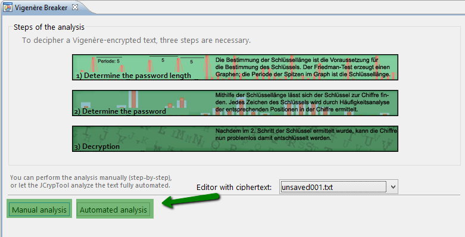
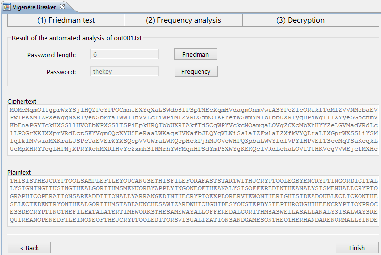

In the Vigenère-breaker, you can decrypt a Vigenère-encrypted text fully automated or manually. Select whether you want the automated analysis or to follow through the decryption process manually.
If you choose the automated mode, the result (decrypted text and the key) will be displayed directly to you, with the option to see the solution steps and details to finding the key length and the key.

If you choose the manual mode, you have to complete the following steps: Friedman test and frequency analysis.
The displayed diagram shows how good the cipher correlates, shifted by x against itself.
With a Vigenère-cipher, this graph should show periodic spikes, like in the picture above.
The length of the key is equal to this period. If you have found it, put this value in the text field below, and press "Continue".
The second step analyses every position in the key (whichs length we just have found out). You have to shift the displayed graph, such that the white reference diagram matches the actual, black one as good as possible. This shift of the graph tells us the character on the current position in the key.
You have to save your shift for the current position in the key with a press on "Accept shift". You can also get the automatically calculated result by pressing "Compute".
When you have found all shifts for the positions of the key, the decryption is complete. You can view the result page with a click on "Continue".